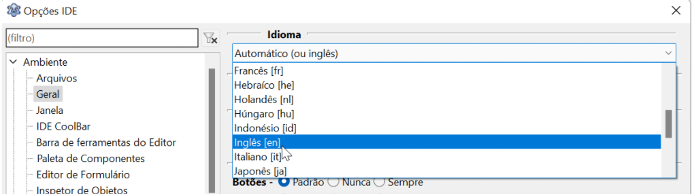

A primeira coisa a ser decidida numa IDE é o idioma que será usado, para os iniciantes talvez seja mais fácil escolher o português, mas é uma zona de conforto perigosa, pois ao procurar ajuda de outrem em fóruns e lista de discussão perceberá que muitos - especialmente programadores brasileiros - têm uma preferência pelo inglês. Isso pode ser explicado porque em geral a documentação é farta em inglês e se desejamos progredir nesse ramo devemos nos especializar em usar este idioma, então escolha o idioma apropriado.
Vá em ->Enviroment->General->Language:

Confirme a alteração e depois reinicie o Lazarus para já estar com o novo idioma.